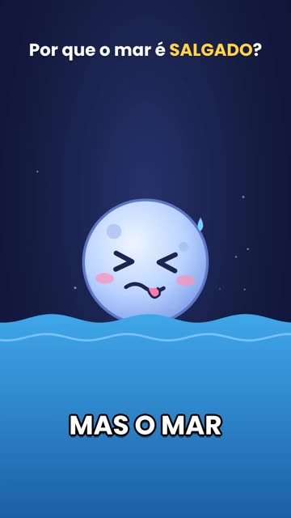
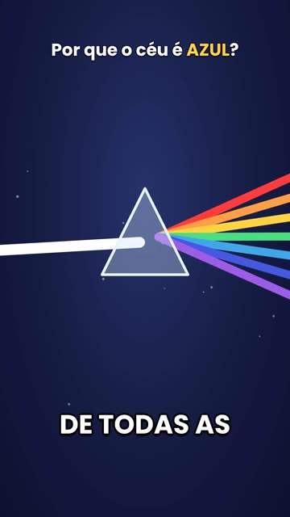
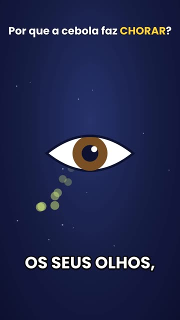
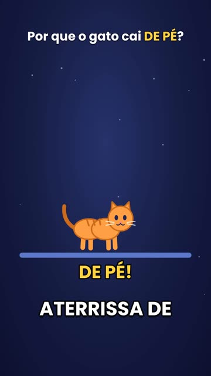

Roteiro com IA, narração gratuita e animação simples: o método por trás dos Shorts do canal MAS POR QUÊ?, ensinado do zero.
O Roteiro que Viraliza: modelo pronto de Short e 5 prompts, em PDF. Chega na hora; você sai da lista quando quiser.
Shorts publicados no canal MAS POR QUÊ?, com narração gerada de graça no CapCut e animação sem ninguém aparecer.




O assunto muda, a estrutura não. É ela que decide se a pessoa fica ou arrasta para o próximo. O roteiro grátis traz cada parte com exemplo real e prompt pronto.
Uma situação ou contradição que dá vontade de ver a resposta.
A frase-marca, sempre igual. Vira a promessa de que a explicação vem aí.
Uma ideia por frase, uma cena por ideia. Nada de termo sem tradução.
O "mas espera" que segura quem ia sair, e o número que faz compartilhar.
Uma só. Seguir o canal ou visitar um link, nunca as duas coisas.
PDF de 8 páginas com o modelo para preencher, um roteiro real marcado parte por parte e o checklist antes de postar.
O Kit Canal Dark com IA mostra cada etapa que leva um tema até um Short pronto, com ferramentas que têm versão gratuita.
Não. O passo a passo usa ferramentas com versão gratuita. Onde houver uma opção paga, o Kit avisa e mostra a alternativa.
Não. O Kit parte do zero e mostra cada tela. Se você usa o celular para mandar mensagem e postar foto, consegue acompanhar.
Depende da prática. No começo, reserve uma tarde por vídeo; com a estrutura pronta, o tempo cai bastante.
O Kit ensina a produzir os vídeos. Crescimento e monetização dependem de constância, do tema e das regras de cada plataforma, por isso não prometemos ganhos.
A compra é feita pela Kiwify. Assim que o pagamento é aprovado, o acesso chega no e-mail que você usou.
Grátis. Modelo pronto, 5 prompts e checklist, em PDF.